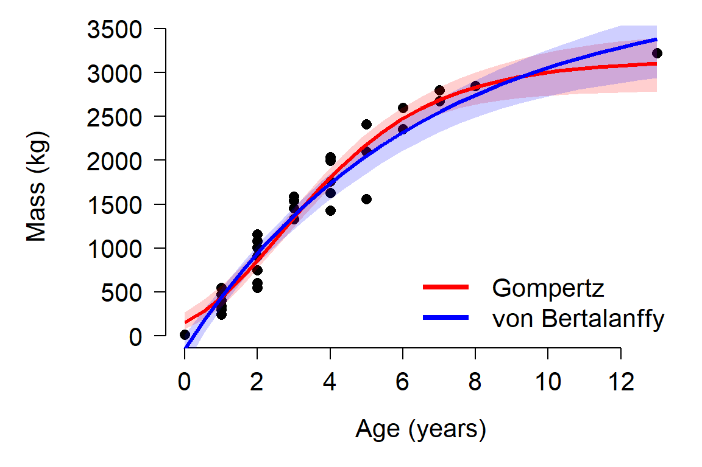
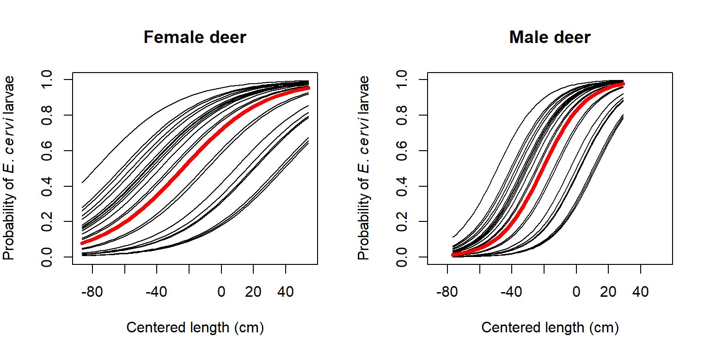

7.3 Generalized linear mixed models (GLMM)
7.3.1 Definition
Just as the linear mixed model (LMM) is an extension of the linear model, the generalized linear mixed model (GLMM) is an extension of the generalized linear model (GLM). The difference between the LMM and GLMM is the same as the difference between the LM and GLM: the response values can come from distributions other than the normal, and the model can be linear on a different scale than of the original scale (i.e., the link scale).
The equations for a simple GLMM, with normal (Gaussian) family and identify link function, one continuous predictor variable X, and random intercepts and slope by a factor Z, are shown below. The normal distributions of the random effects are presented as parameterized by a mean \(\mu\) and variance \(\sigma^2\) (or sometimes SD \(\sigma\))72.
| Component | Expression |
|---|---|
| Stochastic part (Y values) | \(y_i \sim Normal\left(\mu_i,\sigma^2\right)\) |
| Link function | \(E\left(y_i\right)=\mu_i=\eta_i\) |
| Linear predictor | \(\eta_i=\beta_{0,Z}+\beta_{1,Z}X_i\) |
| Random intercepts | \(\beta_{0,Z} \sim Normal\left(\mu_{\beta_0},\sigma_{\beta_0}^2\right)\) |
| Random slopes | \(\beta_{1,Z} \sim Normal\left(\mu_{\beta_1},\sigma_{\beta_1}^2\right)\) |
7.3.2 GLMM on simulated data
Let’s explore the GLMM with a simulated example. We’ll simulate data for a simulated study of the occurrence (i.e., presence/absence) of an imaginary bird species along a gradient of urbanization. The imaginary study was conducted over 12 years. In each year, between 9 and 19 sites were surveyed and the presence or absence of an endangered bird was recorded. The researchers assumed that variation in environmental conditions from year to year affected bird presence, so they used a mixed effects model to analyze their data. The explanatory variable, urb, is an index of urbanization and land use intensity derived from satellite data. Because they are interested in modeling bird presence/absence, they used a logistic regression model, with a random effect for year. In ecology this sort of thing is called an occupancy model.
The code below simulates the dataset described above. First the dataset structure is defined. Then, the hyperparameters, which define the distribution of random effects, are set. These are then used to define the group-level parameters and the individual observations.
set.seed(123)
# years in study
n.groups <- 12
# random number of sites each year
n.sample <- sample(8:20, n.groups, replace=TRUE)
# hyperparameters
mu.beta0 <- 1.5
sd.beta0 <- 1.7
mu.beta1 <- -6.8
sd.beta1 <- 0.1
# draw random effects
beta0 <- rnorm(n.groups, mu.beta0, sd.beta0)
beta1 <- rnorm(n.groups, mu.beta1, sd.beta1)
# set up data frame with explanatory variable.
dlist <- vector("list", n.groups)
for(i in 1:n.groups){
dlist[[i]] <- data.frame(year=i, site=1:n.sample[i])
dlist[[i]]$urb <- runif(n.sample[i], 0, 1)
}
sim <- do.call(rbind, dlist)
# add coefficients for each observation
sim$beta0 <- beta0[sim$year]
sim$beta1 <- beta1[sim$year]
# calculate linear predictor eta (logit scale)
# and probability p (probability scale)
sim$eta <- sim$beta0+sim$beta1*sim$urb
sim$p <- plogis(sim$eta)
# apply stochastic part of model (Bernoulli draws)
sim$y <- rbinom(nrow(sim), 1, sim$p)Let’s start the analysis by examining the data:
par(mfrow=c(1,2), mar=c(5.1, 5.1, 1.1, 1.1))
plot(sim$urb, jitter(sim$y))
boxplot(sim$urb~sim$y, horizontal=TRUE)
The figure suggests that increasing urbanization tends to decrease occupancy by this bird species. This makes sense, biologically, but it also appears that there is a lot of variation in urbanization within the sites where the bird occurs and the sites where it doesn’t. Maybe there is some variation related to year?
# add colors for each year
cols <- rainbow(n.groups)
sim$col <- cols[sim$year]
par(mfrow=c(1,2), mar=c(5.1, 5.1, 1.1, 1.1))
plot(sim$urb, jitter(sim$y), col=sim$col, pch=16)
boxplot(sim$urb~sim$y, horizontal=TRUE)With so many groups (years) it’s hard to tell if year might be affecting the relationship between occupancy and urbanization. Let’s use package lattice to make a hierarchical plot that shows the groups separately.
library(lattice)
bwplot(y~urb|factor(year), data=sim)
The figure shows that urbanization appears to decrease occupancy in almost every year. The bird was not observed at all in year 1. In some years, occupancy dropped off at low levels of urbanization (e.g., years 2, 6, and 7); in other years, the bird was found in sites with much higher levels of urbanization (e.g., years 3 and 9). These findings support the idea that year needs to be accounted for. We’ll fit three versions of the model, because we don’t know if the random effect of year should affect the intercept, slope, or intercept and slope of the linear predictor.
library(lme4)
mod1 <- glmer(y~urb+(1|year), data=sim, family=binomial)
mod2 <- glmer(y~urb+(0+urb|year), data=sim, family=binomial)
mod3 <- glmer(y~urb+(urb|year), data=sim, family=binomial)
mod4 <- glmer(y~urb+(urb||year), data=sim, family=binomial)All of the models converged73, so let’s use AIC to determine which model is the best supported by the data.
aic.df <- AIC(mod1, mod2, mod3, mod4)
aic.df$delta <- aic.df$AIC - min(aic.df$AIC)
aic.df$wt <- exp(-0.5*aic.df$delta)
aic.df$wt <- aic.df$wt/sum(aic.df$wt)
aic.df <- aic.df[order(-aic.df$wt),]
aic.df## df AIC delta wt
## mod1 3 139.7622 0.000000 0.50498148
## mod2 3 141.2993 1.537081 0.23415450
## mod4 4 141.7594 1.997213 0.18603135
## mod3 5 143.5807 3.818534 0.07483267Interestingly, AIC identifies model 1 (random intercept) as the best fitting model, when we know that model 4 (random uncorrelated slopes and intercepts) is the truth. Looking back at the simulation parameters, can you guess why this happened? However, \(\Delta\left(AIC\right)\) was <2 for models 1, 2, and 4, suggesting that any of them could be considered “best fitting”.
Inspect the outputs to see what the parameter estimates are. The estimated intercept and slope aren’t very close to the true values (mu.beta0 and mu.beta1), but this might have something do with the large variability in the intercepts (sd.beta0).
summary(mod1)## Generalized linear mixed model fit by maximum likelihood (Laplace
## Approximation) [glmerMod]
## Family: binomial ( logit )
## Formula: y ~ urb + (1 | year)
## Data: sim
##
## AIC BIC logLik deviance df.resid
## 139.8 149.1 -66.9 133.8 161
##
## Scaled residuals:
## Min 1Q Median 3Q Max
## -2.8969 -0.4530 -0.1617 0.3846 4.1386
##
## Random effects:
## Groups Name Variance Std.Dev.
## year (Intercept) 1.137 1.066
## Number of obs: 164, groups: year, 12
##
## Fixed effects:
## Estimate Std. Error z value Pr(>|z|)
## (Intercept) 1.959 0.602 3.254 0.00114 **
## urb -7.312 1.330 -5.496 3.88e-08 ***
## ---
## Signif. codes: 0 '***' 0.001 '**' 0.01 '*' 0.05 '.' 0.1 ' ' 1
##
## Correlation of Fixed Effects:
## (Intr)
## urb -0.753The intercepts vary quite a bit between years:
coef(mod1)$year## (Intercept) urb
## 1 0.8792071 -7.312053
## 2 1.4874052 -7.312053
## 3 2.8794661 -7.312053
## 4 2.0679683 -7.312053
## 5 1.3682659 -7.312053
## 6 2.5975640 -7.312053
## 7 0.9167481 -7.312053
## 8 3.6762635 -7.312053
## 9 2.6771235 -7.312053
## 10 1.1477449 -7.312053
## 11 2.0878343 -7.312053
## 12 2.0208604 -7.312053Plotting the intercept vs. year (i.e., time) might tell us something about how environmental factors varied over time.
ints <- coef(mod1)$year
par(mfrow=c(1,1))
plot(ints[,1], type="o", lwd=3, pch=16)
It appears that the intercept dropped precipitously 3 times: year 3, year 6, and years 8-10. Maybe something happened in those years that reduced the likelihood of the bird showing up. For example, maybe these were drought years. Or maybe those were the years when new cohorts of graduate students were recruited who weren’t as effective at finding the birds. Whatever the cause of the variation was, the GLMM accounted for it. Explaining and interpreting that variation it is the job of the biologist.
We’ll finish our example GLMM analysis by plotting the model predictions.
# number of points and x values
pn <- 50
px <- seq(0, 1, length=pn)
# predictions by level (year)
dx1 <- expand.grid(year=1:n.groups, urb=px)
dx1 <- dx1[order(dx1$year, dx1$urb),]
# coefficients (include random beta0)
dx1$y <- predict(mod1, newdata=data.frame(dx1), type="link")
dx1$y <- plogis(dx1$y)
dx1$col <- cols[dx1$year]
# predictions for "average"
dx2 <- data.frame(year=NA, urb=px)
dx2$y <- predict(mod1, newdata=data.frame(dx2),
type="link", re.form=NA, allow.new.levels=TRUE)
dx2$y <- plogis(dx2$y)Now make the plot:
par(mfrow=c(1,1), mar=c(5.1, 5.1, 1.1, 1.1),
lend=1, las=1, bty="n",
cex.axis=1.3, cex.lab=1.3)
plot(dx1$urb, dx1$y, type="n",
ylim=c(0,1), ylab="Occupancy probability",
xlab="Urbanization index")
for(i in 1:n.groups){
flag <- which(dx1$year==i)
points(dx1$urb[flag], dx1$y[flag], type="l", col="grey60")
}
points(dx2$urb, dx2$y, type="l", lwd=3)7.3.3 GLMM on real data
This example is adapted from Zuur et al. (2009a). Vicente et al. (2005) studied the distribution of the parasitic nematode Elaphostrongylus cervi in red deer (Cervus elephus) in Spain (below)74. Red deer are the primary hosts of E. cervi, which primarily affect the hosts’ lung tissue. Vicente et al. (2005) surveyed deer feces on many farms in Spain and tested droppings for E. cervi larvae. We will analyze part of their dataset, to see if red deer size and sex affect the occurrence of E. cervi larvae. We will use GLMM to account for potential variation in parasite occurrence between farms. GLMM is appropriate in this situation because we are not interested in the effects of particular farms, which are a subsample of the locations where red deer occur.

Download the dataset and save it to your R home directory. This is a tab-delimited file (.txt), so you need to use read.table() instead of read.csv().
dat.name <- "DeerEcervi.txt"
dat <- read.table(dat.name, sep="\t", header=TRUE)The dataset has the following variables:
| Variable | Meaning |
|---|---|
| Farm | Farm (i.e., sampling site) |
| Sex | Sex of deer (1 = female, 2 = male) |
| Length | Deer body length (cm) |
| Ecervi | Parasite load in fecal sample |
Because we are interested in parasite occurrence, not abundance, we should use logistic regression. That is, a binomial GLM with a logit link. We will include a random effect associated with farm. Before running the analysis, let’s modify the variables in the dataset. First, define a response variable y that is 1 when parasites are present and 0 when parasite are absent. Then, center the deer lengths by subtracting the mean length. Finally, recode the sexes as f and m instead of 1 and 2. This is optional but will make things easier later.
dat$y <- ifelse(dat$Ecervi > 0, 1, 0)
dat$len <- dat$Length-mean(dat$Length)
dat$sex <- ifelse(dat$Sex==1, "f", "m")Now we can fit a model. Like the original authors, we will investigate the effects of sex, size, and farm. The model for parasite presence y in individual j on farm i, with probability \(p_{ij}\), varies with length \(L_{ij}\), sex \(S_{ij}\), the interaction between sex and length \(S_{ij}L_{ij}\), and farm \(F_i\) as:
\[y_i \sim Bernoulli\left(p_{ij}\right)\] \[logit\left(p_{ij}\right)=\beta_0+\beta_1L_{ij}+\beta_2S_{ij}+\beta_3L_{ij}S_{ij}+\gamma_i\] \[\gamma_i \sim Normal\left(\mu_\gamma,\sigma_{\gamma}\right)\]
In this model farm has a random effect on the intercept, \(\gamma_i\). The random effects on the intercepts are assumed to come from a normal distribution with mean \(\mu_{\gamma}\) and SD \(\sigma_{\gamma}\). Some people prefer to write the model a slightly different way, which combines the overall intercept \(\beta_0\) with the random effects on the intercept \(\gamma_i\) as a single parameter \(\beta_{0,i}\):
\[logit\left(p_{ij}\right)=\beta_{0,i}+\beta_1L_{ij}+\beta_2S_{ij}+\beta_3L_{ij}S_{ij}+\gamma_i\] \[\beta_{0,i} \sim Normal\left(\mu_{\beta_0},\sigma_{\beta_0}\right)\]
In this format, the combined intercept \(\beta_{0,i}\), is equivalent to \(\left( \beta_0 + \gamma_i \right)\) for each group i. This is the way I prefer to write GLMM formulas because it makes it more clear what the random effects are really doing.
GLMM can be fit with lme4::glmer():
library(lme4)
mod1 <- glmer(y~len*sex+(1|Farm), data=dat, family=binomial)
summary(mod1)## Generalized linear mixed model fit by maximum likelihood (Laplace
## Approximation) [glmerMod]
## Family: binomial ( logit )
## Formula: y ~ len * sex + (1 | Farm)
## Data: dat
##
## AIC BIC logLik deviance df.resid
## 832.6 856.1 -411.3 822.6 821
##
## Scaled residuals:
## Min 1Q Median 3Q Max
## -6.2678 -0.6090 0.2809 0.5022 3.4546
##
## Random effects:
## Groups Name Variance Std.Dev.
## Farm (Intercept) 2.391 1.546
## Number of obs: 826, groups: Farm, 24
##
## Fixed effects:
## Estimate Std. Error z value Pr(>|z|)
## (Intercept) 0.938969 0.356004 2.638 0.00835 **
## len 0.038964 0.006917 5.633 1.77e-08 ***
## sexm 0.624487 0.222938 2.801 0.00509 **
## len:sexm 0.035859 0.011409 3.143 0.00167 **
## ---
## Signif. codes: 0 '***' 0.001 '**' 0.01 '*' 0.05 '.' 0.1 ' ' 1
##
## Correlation of Fixed Effects:
## (Intr) len sexm
## len -0.107
## sexm -0.189 0.238
## len:sexm 0.091 -0.514 0.232The model is essentially an ANCOVA model (continuous predictor that interacts with a factor, sex) fit as a binomial GLM (logistic regression) with a random effect of another factor (Farm). Interpreting the fixed effects length (len) and sex is a little tricky because of the interaction. We have to be careful and think about which observations each coefficient applies to:
- The printed intercept,
(Intercept), of 0.939 is the intercept for the baselinesex, females, regardless of farm effects. - The printed coefficient for length (
len), 0.038, is the slope for the baselinesex(females). - The intercept for males is the baseline intercept plus the effect of being male: 0.9389 + 0.6244 = 1.5634.
- The slope for males is the baseline slope plus the effect of being male on the slope: 0.0389 + 0.0358 = 0.0748.
Thus, the fixed effects for females are:
\[logit\left(p_j\right)=0.939+0.038L_j\]
And the fixed effects for males are:
\[logit\left(p_j\right)=\left(0.939+0.624\right)+\left(0.039+0.036\right)L_j=1.563+0.075L_j\]
Now let’s plot the model predictions against the original data. We’ll assemble a new dataset that covers the domain of x values (centered lengths), both sexes, and the 24 farms.
farms <- sort(unique(dat$Farm))
nfarm <- length(farms)
agg <- aggregate(len~sex, data=dat, range)
agg <- agg[[2]]
n <- 50
dx1 <- expand.grid(
sex="f",
len=seq(agg[1,1], agg[1,2], length=n),
Farm=farms)
dx2 <- expand.grid(
sex="m",
len=seq(agg[2,1], agg[2,2], length=n),
Farm=farms)
dx <- rbind(dx1, dx2)Now generate the predictions:
pred <- predict(mod1, newdata=data.frame(dx), type="link")
dx$y <- pred
# inverse link function
dx$py <- plogis(dx$y)The predictions we just calculated are specific to each farm. The “average” probability, which ignores farm, can be obtained either predicting without random effects (safest), by manual calculation using the fixed effects (more trouble but generally okay) or by averaging across levels of the random effect (not recommended). The first two methods are demonstrated below, but we’re going to use the outputs from the first.
# method 1: predict with re.form=NA
dx3 <- dx[which(dx$Farm == farms[1]),]
dx3$y <- predict(mod1,
newdata=data.frame(dx3),
type="link", re.form=NA)
dx3$py <- plogis(dx3$y)
# method 1 ver. 2: predict to a new level of the random effect
dx5 <- dx[which(dx$Farm == farms[1]),]
dx5$Farm <- NA
dx5$y <- predict(mod1,
newdata=data.frame(dx5),
type="link", re.form=NA,
allow.new.levels=TRUE)
dx5$py <- plogis(dx5$y)
# method 2: manually calculate
dx4 <- dx3
flag <- which(dx4$sex == "f")
dx4$y[flag] <- 0.939+0.038*dx4$len[flag]
dx4$y[-flag] <- 1.563+0.075*dx4$len[-flag]For clarity, we will plot females and males on separate plots. Also for clarity, we will not plot the data and instead will plot the predicted probabilities.
par(mfrow=c(1,2))
plot(dx$len, dx$py, type="n", ylim=c(0,1),
xlab="Centered length (cm)",
ylab=expression(Probability~of~italic(E)*.~italic(cervi)~larvae))
use.dx <- dx[which(dx$sex == "f"),]
for(i in 1:nfarm){
flag <- which(use.dx$Farm == farms[i])
points(use.dx$len[flag], use.dx$py[flag], type="l")
}
flag <- which(dx3$sex == "f")
points(dx3$len[flag], dx3$py[flag], type="l", lwd=4, col="red")
title(main="Female deer")
plot(dx$len, dx$py, type="n", ylim=c(0,1),
xlab="Centered length (cm)",
ylab=expression(Probability~of~italic(E)*.~italic(cervi)~larvae))
use.dx <- dx[which(dx$sex == "m"),]
for(i in 1:nfarm){
flag <- which(use.dx$Farm == farms[i])
points(use.dx$len[flag], use.dx$py[flag], type="l")
}
flag <- which(dx3$sex == "m")
points(dx3$len[flag], dx3$py[flag], type="l", lwd=4, col="red")
title(main="Male deer")
It is worth asking what the 95% CI of the predicted probability for an “average” farm would be. We can calculate this using some information from the summary of model 1 (see above). The random effects on the intercept for each farm have mean 0 and SD = 1.546. Because this model has only a random intercept, and not a random slope, we can express uncertainty about the predicted value (on the logit scale) by shifting the predicted value up or down. This means that the predicted value (on the logit scale) has a confidence interval defined by a normal distribution with the predicted value as the mean, and a standard deviation of 1.546. For any predicted value \(E(logit(p))\), the 95% CI can be approximated as \(E(logit(p)) \pm 1.96\times1.546\).
In R we can calculate the CI directly using the normal distribution quantile functions:
dx5 <- dx[which(dx$Farm == farms[1]),]
dx5$Farm <- NA
dx5$y <- predict(mod1,
newdata=data.frame(dx5),
type="link", re.form=NA,
allow.new.levels=TRUE)
dx5$lo <- qnorm(0.025, dx5$y, 1.546)
dx5$up <- qnorm(0.975, dx5$y, 1.546)
# inverse link function
dx5$py <- plogis(dx5$y)
dx5$plo <- plogis(dx5$lo)
dx5$pup <- plogis(dx5$up)Finally, we can make the plot with the approximated 95% CI:
par(mfrow=c(1,1))
plot(dx$len, dx$py, type="n", ylim=c(0,1),
xlab="Centered length (cm)",
ylab=expression(Probability~of~italic(E)*.~italic(cervi)~larvae))
flag1 <- which(dx5$sex == "f")
flag2 <- which(dx5$sex == "m")
polygon(x=c(dx5$len[flag1], rev(dx5$len[flag1])),
y=c(dx5$plo[flag1], rev(dx5$pup[flag1])),
border=NA, col="#FF000030")
polygon(x=c(dx5$len[flag2], rev(dx5$len[flag2])),
y=c(dx5$plo[flag2], rev(dx5$pup[flag2])),
border=NA, col="#0000FF30")
points(dx5$len[flag1], dx5$py[flag1], type="l", lwd=3, col="red3")
points(dx5$len[flag2], dx5$py[flag2], type="l", lwd=3, col="blue3")
legend("bottomright", legend=c("Female", "Male"),
lwd=3, col=c("red3", "blue3"), bty="n")
Because the GLMM we fit was a logistic regression model, you could also calculate an ROC curve and AUC) to express the predictive accuracy of the model. For other GLMM, you could perform a cross-validation analysis to see how well the model predicts out-of-sample data.